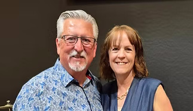

Brian & Phaedra Alton
Apostle Dr. Brian Alton has devoted his life to advancing the Kingdom of God through the faithful preaching of the Gospel of Jesus Christ, empowering the Church to transform culture by the power of the Holy Spirit, and reaching the world through intentional evangelism. He is widely recognized for his strong prophetic and psalmist anointing and serves as a gifted singer, songwriter, musician, television and radio host, respected conference speaker, and bestselling author.
Following a fruitful and impactful tenure in ministry, Apostle Brian heard the voice of the Lord once again ask, "Would you do it all again for Me?" With unwavering obedience and renewed vision, he responded with a wholehearted yes. This divine encounter led to the founding of Restoration Church International, established with the faithful support of Pastors David and Jennifer Foster.
Together with his wife, Pastor Phaedra, Apostle Brian serves with a deep commitment to seeing lives transformed through the presence and power of God. Their vision is to create a place where individuals can encounter the tangible presence of God, experience true spiritual freedom, discover their God-given purpose, and be equipped to make a lasting impact in the world. It is their sincere desire that Restoration Church International be a refuge for those seeking healing, belonging, and revival.
Apostle Brian and Pastor Phaedra reside in Waddell, Arizona. They are the proud parents of three children: Brian Jr. (married to Naomi), Michael David, and Abigail Rose. They are also joyfully known as "Papaw" and "Mimi" to their beloved grandchildren, Elisha Andrew and Eliana Faith.